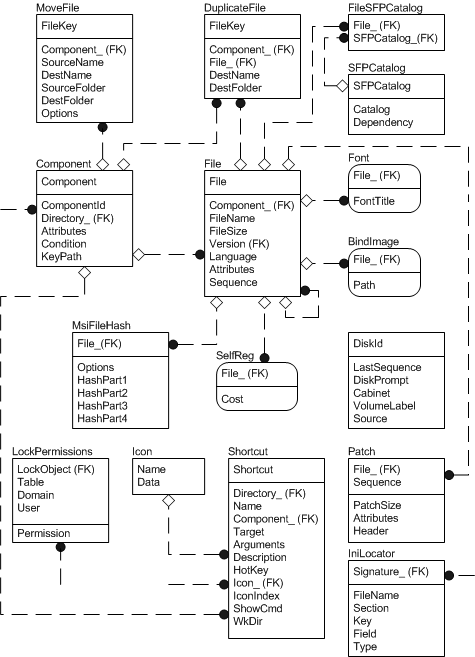

For more information about this diagram, see the entity relationship diagram legend.
An installer package developer should consider populating the file table group of tables after breaking the application into components and features and after populating the core tables group. The file table group contains all of the files belonging to the installation and most of these files are listed in the File table. The Directory table is not shown in the figure but is closely related to the file table group. The Directory table gives the directory structure of the installation.
The file group of tables contains all of the tables that are related to files.
The File table lists files belonging to the installation. Files that are not listed in the File table include disk files, which are listed in Media table. Because every file belongs to a component, the File table has an external key into the Component table.
The RemoveFile table contains a list of files to be removed by the RemoveFiles action.
The Font table lists font files to be registered with the system.
The SelfReg table lists module files of the installation that are self-registered.
The Media table lists the source media and disks belonging to the installation.
The BindImage table lists files that are bound to DLLs imported by executables.
The MoveFile table specifies which files are moved during the installation.
The DuplicateFile table specifies which files are duplicated during the installation.
The IniFile table lists the .ini files and the information that the application needs to set in the file.
The RemoveIniFile table contains the information an application needs to delete from a .ini file.
The Environment table is used to set the values of environment variables.
The Icon table provides icon information which is copied to a file as a part of product advertisement.
The FileSFPCatalog table associates specified files with system file protection catalog files.
Windows Vista, Windows Server 2003 and Windows XP: Not supported.
The SFPCatalog table contains system file protection catalogs.
Windows Vista, Windows Server 2003 and Windows XP: Not supported.
The MsiFileHash table is used to store a 128-bit hash of a source file provided by the Windows Installer package.
Â
Â